Chapter 9
Algorithm Types and Modes
There are two basic types of symmetric algorithms: block ciphers and stream ciphers. Block ciphers operate on blocks of plaintext and ciphertext — usually of 64 bits but sometimes longer. Stream ciphers operate on streams of plaintext and ciphertext one bit or byte (sometimes even one 32-bit word) at a time. With a block cipher, the same plaintext block will always encrypt to the same ciphertext block, using the same key. With a stream cipher, the same plaintext bit or byte will encrypt to a different bit or byte every time it is encrypted.
A cryptographic mode usually combines the basic cipher, some sort of feedback, and some simple operations. The operations are simple because the security is a function of the underlying cipher and not the mode. Even more strongly, the cipher mode should not compromise the security of the underlying algorithm.
There are other security considerations: Patterns in the plaintext should be concealed, input to the cipher should be randomized, manipulation of the plaintext by introducing errors in the ciphertext should be difficult, and encryption of more than one message with the same key should be possible. These will be discussed in detail in the next sections.
Efficiency is another consideration. The mode should not be significantly less efficient than the underlying cipher. In some circumstances it is important that the ciphertext be the same size as the plaintext.
A third consideration is fault-tolerance. Some applications need to parallelize encryption or decryption, while others need to be able to preprocess as much as possible. In still others it is important that the decrypting process be able to recover from bit errors in the ciphertext stream, or dropped or added bits. As we will see, different modes have different subsets of these characteristics.
9.1 Electronic Codebook Mode
Electronic codebook (ECB) mode is the most obvious way to use a block cipher: A block of plaintext encrypts into a block of ciphertext. Since the same block of plaintext always encrypts to the same block of ciphertext, it is theoretically possible to create a code book of plaintexts and corresponding ciphertexts. However, if the block size is 64 bits, the code book will have 264 entries — much too large to precompute and store. And remember, every key has a different code book.
This is the easiest mode to work with. Each plaintext block is encrypted independently. You don’t have to encrypt a file linearly; you can encrypt the 10 blocks in the middle first, then the blocks at the end, and finally the blocks in the beginning. This is important for encrypted files that are accessed randomly, like a database. If a database is encrypted with ECB mode, then any record can be added, deleted, encrypted, or decrypted independently of any other record — assuming that a record consists of a discrete number of encryption blocks. And processing is parallizeable; if you have multiple encryption processors, they can encrypt or decrypt different blocks without regard for each other.
The problem with ECB mode is that if a cryptanalyst has the plaintext and ciphertext for several messages, he can start to compile a code book without knowing the key. In most real-world situations, fragments of messages tend to repeat. Different messages may have bit sequences in common. Computer-generated messages, like electronic mail, may have regular structures. Messages may be highly redundant or have long strings of zeros or spaces.
If a cryptanalyst learns that the plaintext block “5e081bc5” encrypts to the
ciphertext block “7ea593a4,” he can immediately decrypt that ciphertext block
whenever it appears in another message. If the encrypted messages have a lot
of redundancies, and these tend to show up in the same places in different
messages, a cryptanalyst can get a lot of information. He can mount statistical
attacks on the underlying plaintext, irrespective of the strength of the block
cipher.
This vulnerability is greatest at the beginning and end of messages, where well-defined headers and footers contain information about the sender, receiver, date, and so on. This problem is sometimes called stereotyped beginnings and stereotyped endings.
On the plus side, there is no security risk in encrypting multiple messages with the same key. In fact, each block can be looked at as a separate message encrypted with the same key. Bit errors in the ciphertext, when decrypted, will cause the entire plaintext block to decrypt incorrectly but will not affect the rest of the plaintext. However, if a ciphertext bit is accidentally lost or added, all subsequent ciphertext will decrypt incorrectly unless there is some kind of frame structure to realign the block boundaries.
Padding
Most messages don’t divide neatly into 64-bit (or whatever size) encryption blocks; there is usually a short block at the end. ECB requires 64-bit blocks. Padding is the way to deal with this problem.
Pad the last block with some regular pattern — zeros, ones, alternating ones and zeros — to make it a complete block. If you need to delete the padding after decryption, add the number of padding bytes as the last byte of the last block. For example, assume the block size is 64 bits and the last block consists of 3 bytes (24 bits). Five bytes of padding are required to make the last block 64 bits; add 4 bytes of zeros and a final byte with the number 5. After decryption, delete the last 5 bytes of the last decryption block. For this method to work correctly, every message must be padded. Even if the plaintext ends on a block boundary, you have to pad one complete block. Otherwise, you can use an end-of-file character to denote the final plaintext byte, and then pad after that character.
Figure 9.1 is an alternative, called ciphertext stealing [402]. Pn-1 is the last full plaintext block and Pn is the final, short, plaintext block. Cn-1 is the last full ciphertext block and Cn is the final, short, ciphertext block. C’ is just an intermediate result and is not part of the transmitted ciphertext.
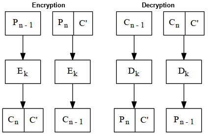
Figure 9.1 Ciphertext stealing in ECB mode.
9.2 Block Replay
A more serious problem with ECB mode is that an adversary could modify encrypted messages without knowing the key, or even the algorithm, in such a way as to fool the intended recipient. This problem was first discussed in [291].
To illustrate the problem, consider a money transfer system that moves money between accounts in different banks. To make life easier for the bank’s computer systems, banks agree on a standard message format for money transfer that looks like this:
Bank One: Sending 1.5 blocks Bank Two: Receiving 1.5 blocks Depositor’s Name 6 blocks Depositor’s Account 2 blocks Amount of Deposit 1 block
A block corresponds to an 8-byte encryption block. The messages are encrypted using some block algorithm in ECB mode. Mallory, who is listening on the communications line between two banks, Bank of Alice and Bank of Bob, can use this information to get rich. First, he sets up his computer to record all of the encrypted messages from Bank of Alice to Bank of Bob. Then, he transfers $100 from Bank of Alice to his account in Bank of Bob. Later, he does it again. Using his computer, he examines the recorded messages looking for a pair of identical messages. These messages are the ones authorizing the $100 transfers to his account. If he finds more than one pair of identical messages (which is most likely in real life), he does another money transfer and records those results. Eventually he can isolate the message that authorized his money transaction.
Now he can insert that message into the communications link at will. Every time he sends the message to Bank of Bob, another $100 will be credited to his account. When the two banks reconcile their transfers (probably at the end of the day), they will notice the phantom transfer authorizations; but if Mallory is clever, he will have already withdrawn the money and headed for some banana republic without extradition laws. And he probably did his scam with dollar amounts far larger than $100, and with lots of different banks.
At first glance, the banks could easily prevent this by adding a timestamp to their messages.
Date/Time Stamp: 1 block Bank One: Sending 1.5 blocks Bank Two: Receiving 1.5 blocks Depositor’s Name 6 blocks Depositor’s Account 2 blocks Amount of Deposit 1 block
Two identical messages would be easy to spot using this system. Still, using a technique called block replay, Mallory can still get rich. Figure 9.2 shows that Mallory can pick out the eight ciphertext blocks that correspond to his own name and account number: blocks 5 through 12. A diabolical laugh is appropriate at this point, because Mallory is now ready.
| 1 | 2 | 3 | 4 | 5 | 6 | 7 | 8 | 9 | 10 | 11 | 12 | 13 | |||||||||||||
| Date Stamp | Sending Bank | Receiving Bank | Depositor’s Name | Depositor’s Account | Amount | ||||||||||||||||||||
Figure 9.2 Encryption blocks for an example record.
He intercepts random messages from Bank of Alice to Bank of Bob and replaces blocks 5 through 12 in the message with the bytes that correspond to his name and account number. Then he sends them on to Bank of Bob. He doesn’t have to know who the original depositor was; he doesn’t even have to know what the amount was (although, he could correlate the messages he doctored with the various deposits into his account and determine the encrypted blocks corresponding to some dollar amount). He simply changes the name and account numbers to his own and watches his account balance grow. (I suppose Mallory has to be careful not to modify a withdrawal message, but assume for the moment that each is a different length or something.)
This will take longer than a day for the banks to catch. When they reconcile their transfers at the end of the day, everything will match. It probably won’t be until one of the legitimate depositors notices that his deposits are not being credited, or when someone flags unusual activity in Mallory’s account, that the banks will figure out the scam. Mallory isn’t stupid, and by then he will have closed his account, changed his name, and bought a villa in Argentina.
Banks can minimize the problem by changing their keys frequently, but this only means that Mallory is going to have to work more quickly. Adding a MAC, however, will also solve the problem. Even so, this is a fundamental problem with ECB mode. Mallory can remove, repeat, or interchange blocks at will. The solution is a technique called chaining.
9.3 Cipher Block Chaining Mode
Chaining adds a feedback mechanism to a block cipher: The results of the encryption of previous blocks are fed back into the encryption of the current block. In other words, each block is used to modify the encryption of the next block. Each ciphertext block is dependent not just on the plaintext block that generated it but on all the previous plaintext blocks.
In cipher block chaining (CBC) mode, the plaintext is XORed with the previous ciphertext block before it is encrypted. Figure 9.3a shows CBC encryption in action. After a plaintext block is encrypted, the resulting ciphertext is also stored in a feedback register. Before the next plaintext block is encrypted, it is XORed with the feedback register to become the next input to the encrypting routine. The resulting ciphertext is again stored in the feedback register, to be XORed with the next plaintext block, and so on until the end of the message. The encryption of each block depends on all the previous blocks.
Decryption is just as straightforward (see Figure 9.3b). A ciphertext block is decrypted normally and also saved in a feedback register. After the next block is decrypted, it is XORed with the results of the feedback register. Then the next ciphertext block is stored in the feedback register, and so on, until the end of the message.
Mathematically, this looks like:
Ci = EK(Pi ⊕ Ci-1) Pi = Ci-1 ⊕ DK(Ci)
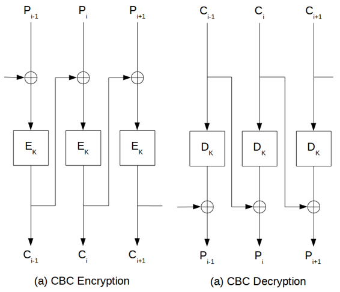
Figure 9.3 Cipher block chaining mode.
Initialization Vector
CBC mode forces identical plaintext blocks to encrypt to different ciphertext blocks only when some previous plaintext block is different. Two identical messages will still encrypt to the same ciphertext. Even worse, two messages that begin the same will encrypt in the same way up to the first difference.
Some messages have a common header: a letterhead, or a “From” line, or whatever. While block replay would still be impossible, this identical beginning might give a cryptanalyst some useful information.
Prevent this by encrypting random data as the first block. This block of random data is called the initialization vector (IV), initializing variable, or initial chaining value. The IV has no meaning; it’s just there to make each message unique. When the receiver decrypts this block, he just uses it to fill the feedback register and otherwise ignores it. A timestamp often makes a good IV. Otherwise, use some random bits from someplace.
With the addition of IVs, identical plaintext messages encrypt to different ciphertext messages. Thus, it is impossible for an eavesdropper to attempt block replay, and more difficult for him to build a code book. While the IV should be unique for each message encrypted with the same key, it is not an absolute requirement.
The IV need not be secret; it can be transmitted in the clear with the ciphertext. If this seems wrong, consider the following argument. Assume that we have a message of several blocks: B1, B2,..., Bi. B1 is encrypted with the IV. B2 is encrypted using the ciphertext of B1 as the IV. B3 is encrypted using the ciphertext of B2 as the IV, and so on. So, if there are n blocks, there are n-1 exposed “IVs,” even if the original IV is kept secret. So there’s no reason to keep the IV secret; the IV is just a dummy ciphertext block — you can think of it as B0 to start the chaining.
Padding
Padding works just like ECB mode, but in some applications the ciphertext has to be exactly the same size as the plaintext. Perhaps a plaintext file has to be encrypted and then replaced in the exact same memory location. In this case, you have to encrypt the last short block differently. Assume the last block has j bits. After encrypting the last full block, encrypt the ciphertext again, select the left-most j bits of the encrypted ciphertext, and XOR that with the short block to generate the ciphertext. Figure 9.4 illustrates this.
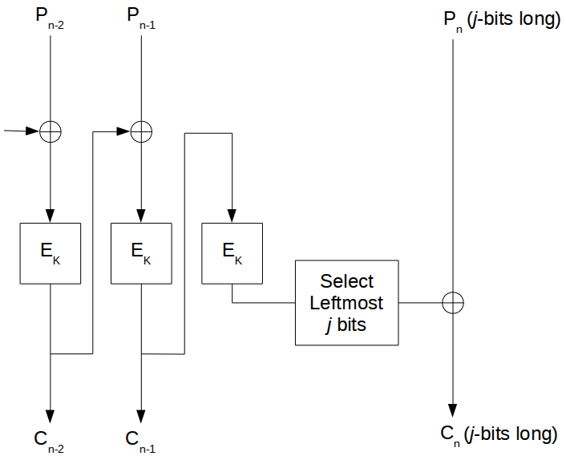
Figure 9.4 Encrypting the last short block in CBC mode.
The weakness here is that while Mallory cannot recover the last plaintext block, he can change it systematically by changing individual bits in the ciphertext. If the last few bits of the ciphertext contain essential information, this is a weakness. If the last bits simply contain housekeeping information, it isn’t a problem.
Ciphertext stealing is a better way (see Figure 9.5) [402]. Pn-1 is the last full plaintext block, and Pn is the final, short, plaintext block. Cn-1 is the last full ciphertext block, and Cn is the final, short, ciphertext block. C’ is just an intermediate result and is not part of the transmitted ciphertext. The benefit of this method is that all the bits of the plaintext message go through the encryption algorithm.
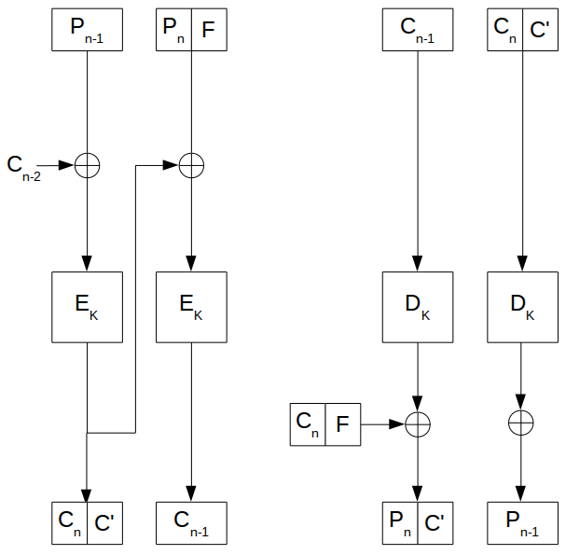
Figure 9.5 Ciphertext stealing in CBC mode.
Error Propagation
CBC mode can be characterized as feedback of the ciphertext at the encryption end and feedforward of the ciphertext at the decryption end. This has implications having to do with errors. A single bit error in a plaintext block will affect that ciphertext block and all subsequent ciphertext blocks. This isn’t significant because decryption will reverse that effect, and the recovered plaintext will have the same single error.
Ciphertext errors are more common. They can easily result from a noisy communications path or a malfunction in the storage medium. In CBC mode, a single-bit error in the ciphertext affects one block and one bit of the recovered plaintext. The block containing the error is completely garbled. The subsequent block has a 1-bit error in the same bit position as the error.
This property of taking a small ciphertext error and converting it into a large plaintext error is called error extension. It is a major annoyance. Blocks after the second are not affected by the error, so CBC mode is self-recovering. Two blocks are affected by an error, but the system recovers and continues to work correctly for all subsequent blocks. CBC is an example of a block cipher being used in a self-synchronizing manner, but only at the block level.
While CBC mode recovers quickly from bit errors, it doesn’t recover at all from synchronization errors. If a bit is added or lost from the ciphertext stream, then all subsequent blocks are shifted one bit out of position and decryption will generate garbage indefinitely. Any cryptosystem that uses CBC mode must ensure that the block structure remains intact, either by framing or by storing data in multiple-block-sized chunks.
Security Problems
Some potential problems are caused by the structure of CBC. First, because a ciphertext block affects the following block in a simple way, Mallory can add blocks to the end of an encrypted message without being detected. Sure, it will probably decrypt to gibberish, but in some situations this is undesirable.
If you are using CBC, you should structure your plaintext so that you know where the message ends and can detect the addition of extra blocks.
Second, Mallory can alter a ciphertext block to introduce controlled changes in the following decrypted plaintext block. For example, if Mallory toggles a single ciphertext bit, the entire block will decrypt incorrectly, but the following block will have a 1-bit error in the corresponding bit position. There are situations where this is desirable. The entire plaintext message should include some kind of controlled redundancy or authentication.
Finally, although plaintext patterns are concealed by chaining, very long messages will still have patterns. The birthday paradox predicts that there will be identical blocks after 2m/2 blocks, where m is the block size. For a 64-bit block size, that’s about 34 gigabytes. A message has to be pretty long before this is a problem.
9.4 Stream Ciphers
Stream ciphers convert plaintext to ciphertext 1 bit at a time. The simplest implementation of a stream cipher is shown in Figure 9.6. A keystream generator (sometimes called a running-key generator) outputs a stream of bits: k1, k2, k3,..., ki. This keystream (sometimes called a running key) is XORed with a stream of plaintext bits, p1, p2, p3,..., pi, to produce the stream of ciphertext bits.
ci = pi ⊕ ki
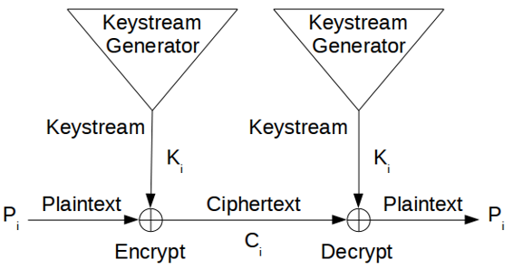
Figure 9.6 Stream cipher.
At the decryption end, the ciphertext bits are XORed with an identical keystream to recover the plaintext bits.
pi = ci ⊕ ki
Since
pi ⊕ ki ⊕ ki = pi
this works nicely.
The system’s security depends entirely on the insides of the keystream generator. If the keystream generator outputs an endless stream of zeros, the ciphertext will equal the plaintext and the whole operation will be worthless. If the keystream generator spits out a repeating 16-bit pattern, the algorithm will be a simple XOR with negligible security (see Section 1.4). If the keystream generator spits out an endless stream of random (not pseudo-random, but real random — see Section 2.8) bits, you have a one-time pad and perfect security.
The reality of stream cipher security lies somewhere between the simple XOR and the one-time pad. The keystream generator generates a bit stream that looks random, but is actually a deterministic stream that can be flawlessly reproduced at decryption time. The closer the keystream generator’s output is to random, the harder time a cryptanalyst will have breaking it.
If, however, the keystream generator produces the same bit stream every time it is turned on, the resulting cryptosystem will be trivial to break. An example will show why.
If Eve has a ciphertext and associated plaintext, she can XOR the plaintext and the ciphertext to recover the keystream. Or, if she has two different ciphertexts encrypted with the same keystream, she can XOR them together and get two plaintext messages XORed with each other. This is easy to break, and then she can XOR one of the plaintexts with the ciphertext to get the keystream.
Now, whenever she intercepts another ciphertext message, she has the keystream bits necessary to decrypt it. In addition, she can decrypt and read any old ciphertext messages she has previously intercepted. When Eve gets a single plaintext/ciphertext pair, she can read everything.
This is why all stream ciphers have keys. The output of the keystream generator is a function of the key. Now, if Eve gets a plaintext/ciphertext pair, she can only read messages encrypted with a single key. Change the key, and the adversary is back to square one. Stream ciphers are especially useful to encrypt never-ending streams of communications traffic: a T-1 link between two computers, for example.
A keystream generator has three basic parts (see Figure 9.7). The internal state describes the current state of the keystream generator. Two keystream generators, with the same key and the same internal state, will produce the same keystream. The output function takes the internal state and generates a keystream bit. The next-state function takes the internal state and generates a new internal state.
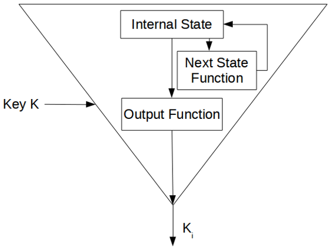
Figure 9.7 Inside a keystream generator.
9.5 Self-Synchronizing Stream Ciphers
For a self-synchronizing stream cipher, each keystream bit is a function of a fixed number of previous ciphertext bits [1378]. The military calls this ciphertext auto key (CTAK). The basic idea was patented in 1946 [667].
Figure 9.8 shows a self-synchronizing stream cipher. The internal state is a function of the previous n ciphertext bits. The cryptographic complexity is in the output function, which takes the internal state and generates a keystream bit.
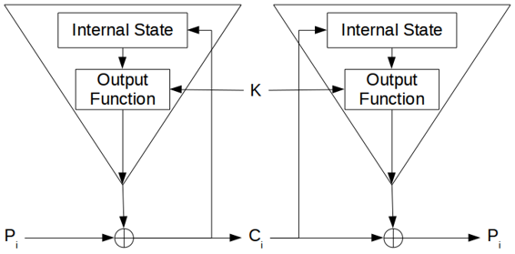
Figure 9.8 A self-synchronizing keystream generator.
Since the internal state depends wholly on the previous n ciphertext bits, the decryption keystream generator will automatically synchronize with the encryption keystream generator after receiving n ciphertext bits.
In smart implementations of this mode, each message begins with a random header n bits long. That header is encrypted, transmitted, and then decrypted. The decryption will be incorrect, but after those n bits both keystream generators will be synchronized.
The down side of a self-synchronizing stream cipher is error propagation. For each ciphertext bit garbled in transmission, the decryption keystream generator will incorrectly produce n keystream bits. Therefore, for each ciphertext error, there will be n corresponding plaintext errors, until the garbled bit works its way out of the internal state.
Security Problems
Self-synchronizing stream ciphers are also vulnerable to a playback attack. First Mallory records some ciphertext bits. Then, at a later time, he substitutes this recording into current traffic. After some initial garbage while the receiving end resynchronizes, the old ciphertext will decrypt as normal. The receiving end has no way of knowing that this is not current data, but old data being replayed. Unless timestamps are used, Mallory can convince a bank to credit his account again and again, by replaying the same message (assuming the key hasn’t been changed, of course). Other weaknesses in this type of scheme could be exploited in the cases of very frequent resynchronization [408].
9.6 Cipher-Feedback Mode
Block ciphers can also be implemented as a self-synchronizing stream cipher; this is called cipher-feedback (CFB) mode. With CBC mode, encryption cannot begin until a complete block of data is received. This is a problem in some network applications. In a secure network environment, for example, a terminal must be able to transmit each character to the host as it is entered. When data has to be processed in byte-sized chunks, CBC mode just won’t do.
In CFB mode, data can be encrypted in units smaller than the block size. The following example will encrypt one ASCII character at a time (this is called 8-bit CFB), but nothing is sacred about the number eight. You can encrypt data one bit at a time using 1-bit CFB, although using one complete encryption of a block cipher for a single bit seems like a whole lot of work; a stream cipher might be a better idea. (Reducing the number of rounds of the block cipher to speed things up is not recommended [1269].) You can also use 64-bit CFB, or any n-bit CFB where n is less than or equal to the block size.
Figure 9.9 shows 8-bit CFB mode working with a 64-bit block algorithm. A block algorithm in CFB mode operates on a queue the size of the input block. Initially, the queue is filled with an IV, as in CBC mode. The queue is encrypted and the left-most eight bits of the result are XORed with the first 8-bit character of the plaintext to become the first 8-bit character of the ciphertext. This character can now be transmitted. The same eight bits are also moved to the right-most eight bit positions of the queue, and all the other bits move eight to the left. The eight left-most bits are discarded. Then the next plaintext character is encrypted in the same manner. Decryption is the reverse of this process. On both the encryption and the decryption side, the block algorithm is used in its encryption mode.

Figure 9.9 8-bit cipher-feedback mode.
If the block size of the algorithm is n, then n- bit CFB looks like (see Figure 9.10):
Ci = Pi ⊕ EK(Ci-1) Pi = Ci ⊕ EK(Ci-1)
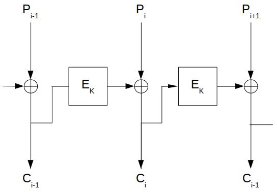
Figure 9.10 n-bit CFB with an n-bit algorithm.
Like CBC mode, CFB mode links the plaintext characters together so that the ciphertext depends on all the preceding plaintext.
Initialization Vector
To initialize the CFB process, the input to the block algorithm must be initialized with an IV. Like the IV used in CBC mode, it need not be secret.
The IV must be unique, though. (This is different from the IV in CBC mode, which should be unique but does not have to be.) If the IV in CFB is not unique, a cryptanalyst can recover the corresponding plaintext. The IV must be changed with every message. It can be a serial number, which increments after each message and does not repeat during the lifetime of the key. For data encrypted for storage, it can be a function of the index used to look up the data.
Error Propagation
With CFB mode, an error in the plaintext affects all subsequent ciphertext and reverses itself at decryption. An error in the ciphertext is more interesting. The first effect of a single-bit error in the ciphertext is to cause a single error in the plaintext. After that, the error enters the shift register, where it causes ciphertext to be garbled until it falls off the other end of the register. In 8-bit CFB mode, 9 bytes of decrypted plaintext are garbled by a single-bit error in the ciphertext. After that, the system recovers and all subsequent ciphertext is decrypted correctly. In general, in n-bit CFB a single ciphertext error will affect the decryption of the current and following m/n-1 blocks, where m is the block size.
One subtle problem with this kind of error propagation is that if Mallory knows the plaintext of a transmission, he can toggle bits in a given block and make it decrypt to whatever he wants. The next block will decrypt to garbage, but the damage may already be done. And he can change the final bits of a message without detection.
CFB is self-recovering with respect to synchronization errors as well. The error enters the shift register, where it garbles 8 bytes of data until it falls off the other end. CFB is an example of block cipher being used as a self-synchronizing stream cipher (at the block level).
9.7 Synchronous Stream Ciphers
In a synchronous stream cipher the keystream is generated independent of the message stream. The military calls this Key Auto-Key (KAK). On the encryption side, a keystream generator spits out keystream bits, one after the other. On the decryption side, another keystream generator spits out the identical keystream bits, one after the other. This works, as long as the two keystream generators are synchronized. If one of them skips a cycle or if a ciphertext bit gets lost during transmission, then every ciphertext character after the error will decrypt incorrectly.
If this happens, the sender and receiver must resynchronize their keystream generators before they can proceed. Frustrating matters even further, they must do this in such a way as to ensure that no part of the keystream is repeated, so the obvious solution of resetting the keystream generator to an earlier state won’t work.
On the plus side, synchronous ciphers do not propagate transmission errors. If a bit is garbled during transmission, which is far more likely than a bit being lost altogether, then only the garbled bit will be decrypted incorrectly. All preceding and subsequent bits will be unaffected.
Since a keystream generator must generate the same output on both the encryption and decryption ends, it must be deterministic. Because it is implemented in a finite-state machine (i.e., a computer), the sequence will eventually repeat. These keystream generators are called periodic. Except for one-time pads, all keystream generators are periodic.
The keystream generator must have a long period, one far longer than the number of bits the generator will output between key changes. If the period is less than the plaintext, then different parts of the plaintext will be encrypted the same way — a severe weakness. If a cryptanalyst knows a piece of the plaintext, he can recover a piece of the keystream and use that to recover more of the plaintext. Even if the analyst only has the ciphertext, he can XOR the sections encrypted with the same keystream and get the XOR of plaintext with plaintext. This is just the simple XOR algorithm with a very long key.
How long a period is long enough depends on the application. A keystream generator encrypting a continuous T-1 link will encrypt 237 bits per day. The keystream generator’s period must be orders of magnitude larger than that, even if the key is changed daily. If the period is long enough, you might only have to change the key weekly or even monthly.
Synchronous stream ciphers also protect against any insertions and deletions in the ciphertext, because these cause a loss of synchronization and will be immediately detected. They do not, however, fully protect against bit toggling. Like block ciphers in CFB mode, Mallory can toggle individual bits in the stream. If he knows the plaintext, he can make those bits decrypt to whatever he wants. Subsequent bits will decrypt correctly, so in certain applications Mallory can still do considerable damage.
Insertion Attack
Synchronous stream ciphers are vulnerable to an insertion attack [93]. Mallory has recorded a ciphertext stream, but does not know the plaintext or the keystream used to encrypt the plaintext.
Original plaintext: p1 p2 p3 p4 ... Original keystream: k1 k2 k3 k4 ... Original ciphertext: c1 c2 c3 c4 ...
Mallory inserts a single known bit, p’, into the plaintext after p1 and then manages to get the modified plaintext encrypted with the same keystream. He records the resultant new ciphertext:
New plaintext: p1 p’ p2 p3 p4 ... Original keystream: k1 k2 k3 k4 k5 ... Updated ciphertext: c1 c’2 c’3 c’4 c’5 ...
Assuming he knows the value of p’, he can determine the entire plaintext after that bit from the original ciphertext and new ciphertext:
k2 = c’2 ⊕ p’, and then p2 = c2 ⊕ k2 k3 = c’3 ⊕ p2, and then p3 = c3 ⊕ k3 k4 = c’4 ⊕ p3, and then p4 = c4 ⊕ k4
Mallory doesn’t even have to know the exact position in which the bit was inserted; he can just compare the original and updated ciphertexts to see where they begin to differ. To protect against this attack, never use the same keystream to encrypt two different messages.
9.8 Output-Feedback Mode
Output-feedback (OFB) mode is a method of running a block cipher as a synchronous stream cipher. It is similar to CFB mode, except that n bits of the previous output block are moved into the right-most positions of the queue (see Figure 9.11). Decryption is the reverse of this process. This is called n-bit OFB. On both the encryption and the decryption sides, the block algorithm is used in its encryption mode. This is sometimes called internal feedback, because the feedback mechanism is independent of both the plaintext and the ciphertext streams [291].
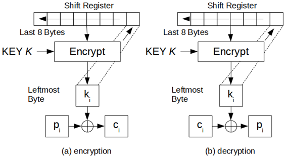
Figure 9.11 8-bit output-feedback mode.
If n is the block size of the algorithm, then n-bit OFB looks like (see Figure 9.12):
Ci = Pi ⊕ Si; Si = EK(Si-1) Pi = Ci ⊕ S1; Si = EK(Si-1)
Si is the state, which is independent of either the plaintext or the ciphertext.
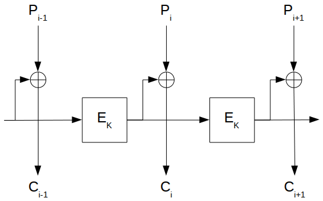
Figure 9.12 n-bit OFB with an n-bit algorithm.
One nice feature of OFB mode is that most of the work can occur offline, before the plaintext message even exists. When the message finally arrives, it can be XORed with the output of the algorithm to produce the ciphertext.
Initialization Vector
The OFB shift register must also be initially loaded with an IV. It should be unique but does not have to be secret.
Error Propagation
OFB mode has no error extension. A single-bit error in the ciphertext causes a single-bit error in the recovered plaintext. This can be useful in some digitized analog transmissions, like digitized voice or video, where the occasional single-bit error can be tolerated but error extension cannot.
On the other hand, a loss of synchronization is fatal. If the shift registers on the encryption end and the decryption end are not identical, then the recovered plaintext will be gibberish. Any system that uses OFB mode must have a mechanism for detecting a synchronization loss and a mechanism to fill both shift registers with a new (or the same) IV to regain synchronization.
Security Problems with OFB
An analysis of OFB mode [588,430,431,789] demonstrates that OFB should be used only when the feedback size is the same as the block size. For example, you should only use a 64-bit algorithm in 64-bit OFB mode. Even though the U.S. government authorizes other feedback sizes for DES [1143], avoid them.
OFB mode XORs a keystream with the text. This keystream will eventually repeat. It is important that it does not repeat with the same key; otherwise, there is no security. When the feedback size equals the block size, the block cipher acts as a permutation of m-bit values (where m is the block length) and the average cycle length is 2m-1. For a 64-bit block length, this is a very long number. When the feedback size n is less than the block length, the average cycle length drops to around 2m/2. For a 64-bit block cipher, this is only 232 — not long enough.
Stream Ciphers in OFB
A stream cipher can also run in OFB mode. In this case, the key affects the next-state function (see Figure 9.13). The output function does not depend on the key; very often it is something simple like a single bit of the internal state or the XOR of multiple bits of the internal state. The cryptographic complexity is in the next-state function; this function is key-dependent. This method is also called internal feedback [291], because the feedback mechanism is internal to the key generation algorithm.
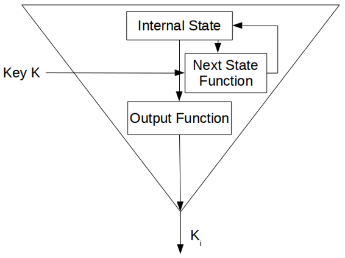
Figure 9.13 A keystream generator in output-feedback mode.
In a variant of this mode, the key determines just the initial state of the keystream generator. After the key sets the internal state of the generator, the generator runs undisturbed from then on.
9.9 Counter Mode
Block ciphers in counter mode use sequence numbers as the input to the algorithm [824,498,715]. Instead of using the output of the encryption algorithm to fill the register, the input to the register is a counter. After each block encryption, the counter increments by some constant, typically one. The synchronization and error propagation characteristics of this mode are identical to those of OFB. Counter mode solves the OFB mode problem of n-bit output where n is less than the block length.
Nothing is sacred about the counter; it does not have to count through all the possible inputs in order. You can use any of the random-sequence generators in Chapters 16 and 17, whether cryptographically secure or not, as input to the block algorithm.
Stream Ciphers in Counter Mode
Stream ciphers in counter mode have simple next-state functions and complicated output functions dependent on the key. This technique, illustrated in Figure 9.14, was suggested in [498,715]. The next-state function can be something as simple as a counter, adding one to the previous state.
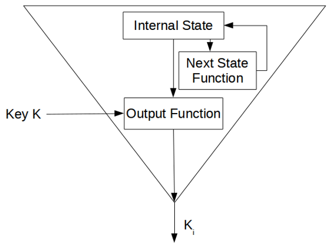
Figure 9.14 A keystream generator in counter mode.
With a counter mode stream cipher, it is possible to generate the ith key bit, ki, without first generating all the previous key bits. Simply set the counter manually to the ith internal state and generate the bit. This is useful to secure random-access data files; you can decrypt a specific block of data without decrypting the entire file.
9.10 Other Block-Cipher Modes
Block Chaining Mode
To use a block algorithm in block chaining (BC) mode, simply XOR the input to the block cipher with the XOR of all the previous ciphertext blocks. As with CBC, an IV starts the process.
Mathematically, this looks like:
Ci = EK(Pi ⊕ Fi) ; Fi+1 = Fi ⊕ Ci Pi = Fi ⊕ DK(Ci) ; Fi+1 = Fi ⊕ Ci
Like CBC, BC’s feedback process extends errors in the plaintext. The primary problem with BC is that because the decryption of a ciphertext block depends on all the previous ciphertext blocks, a single error in the ciphertext will result in the incorrect decryption of all subsequent ciphertext blocks.
Propagating Cipher Block Chaining Mode
Propagating cipher block chaining (PCBC) [1080] mode is similar to CBC mode, except that both the previous plaintext block and the previous ciphertext block are XORed with the current plaintext block before encryption (or after decryption) (see Figure 9.15).
Ci = EK(Pi ⊕ Ci-1 ⊕ Pi-1) Pi = Ci-1 ⊕ Pi-1 ⊕ DK(Ci)
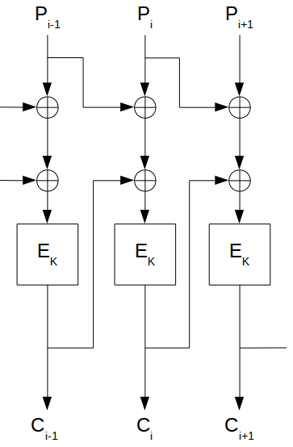
Figure 9.15 Propagating cipher block chaining mode.
PCBC was used in Kerberos version 4 (see Section 24.5) to perform both encryption and integrity checking in one pass. In PCBC mode, an error in the ciphertext will result in incorrect decryption of all blocks that follow. This means that checking a standard block at the end of a message will ensure the integrity of the entire message.
Unfortunately, there is a problem with this mode [875]. Swapping two ciphertext blocks results in the incorrect decryption of the two corresponding plaintext blocks, but due to the nature of the XOR with the plaintext and the ciphertext, the errors cancel. So if the integrity checker looks only at the last few blocks of the decrypted plaintext, it could be fooled into accepting a partially garbled message. Although no one has figured out how to exploit this weakness, Kerberos version 5 switched to CBC mode after the flaw was discovered.
Cipher Block Chaining with Checksum
Cipher block chaining with checksum (CBCC) is a CBC variant [1618]. Keep a running XOR of all the plaintext blocks, and XOR that with the last plaintext block before encryption. CBCC ensures that any change made to any ciphertext block changes the decrypted output of the last block. If the last block contains any sort of integrity check or a constant, then the integrity of the decrypted plaintext can be checked with very little additional overhead.
Output Feedback with a Nonlinear Function
Output feedback with a nonlinear function (OFBNLF) [777] is a variant of both OFB and ECB where the key changes with every block:
Ci = EKi(Pi) ; Ki = EK(Ki - 1) Pi = DKi(Ci) ; Ki = EK(Ki - 1)
A single bit error in the ciphertext propagates to only one plaintext block. However, if a single bit is lost or added, then there is infinite error extension. With a block algorithm that has a complicated key scheduling algorithm, like DES, this mode is slow. I know of no cryptanalysis of this mode.
More Modes
Other modes are possible, although they are not extensively used. Plaintext block chaining (PBC) is like CBC except the previous plaintext block is XORed with the plaintext block instead of with the ciphertext block. Plaintext feedback (PFB) is like CFB, except the plaintext, not the ciphertext, is used for feedback. These two modes allow chosen-plaintext attacks in order to resist known-plaintext attacks. There is also cipher block chaining of plaintext difference (CBCPD). I’m sure it gets even weirder.
If a cryptanalyst has a brute-force keysearch machine, then he can recover the key if he can guess one of the plaintext blocks. Some of these stranger modes amount to light encryption before applying the encryption algorithm: for example, XORing the text with a fixed secret string or permuting the text. Almost anything nonstandard will frustrate this sort of cryptanalysis.
9.11 Choosing a Cipher Mode
If simplicity and speed are your main concerns, ECB is the easiest and fastest mode to use a block cipher. It is also the weakest. Besides being vulnerable to replay attacks, an algorithm in ECB mode is the easiest to cryptanalyze. I don’t recommend ECB for message encryption.
For encrypting random data, such as other keys, ECB is a good mode to use. Since the data is short and random, none of the shortcomings of ECB matter for this application.
For normal plaintext, use CBC, CFB, or OFB. Which mode you choose depends on your specific requirements. Table 9.1 gives a summary of the security and efficiency of the various modes.
CBC is generally best for encrypting files. The increase in security is significant; and while there are sometimes bit errors in stored data, there are almost never synchronization errors. If your application is software-based, CBC is almost always the best choice.
TABLE 9.1 - Summary of Block Cipher Modes
- ECB:
- Security:
- - Plaintext patterns are not concealed.
- - Input to the block cipher is not randomized; it is the same as the plaintext.
- + More than one message can be encrypted with the same key.
- - Plaintext is easy to manipulate, blocks can be removed, repeated, or interchanged.
- Efficiency:
- + Speed is the same as the block cipher.
- - Ciphertext is up to one block longer than the plaintext, due to padding.
- - No preprocessing is possible.
- + Processing is parallelizable.
- Fault-tolerance:
- - A ciphertext error affects one full block of plaintext.
- - Synchronization error is unrecoverable.
- CBC:
- Security:
- + Plaintext patterns are concealed by XORing with previous ciphertext block.
- + Input to the block cipher is randomized by XORing with the previous ciphertext block.
- + More than one message can be encrypted with the same key.
- +/- Plaintext is somewhat difficult to manipulate; blocks can be removed from the beginning and end of the message, bits of the first block can be changed, and repetition allows some controlled changes.
- Efficiency:
- + Speed is the same as the block cipher.
- - Ciphertext is up to one block longer than the plaintext, not counting the IV.
- - No preprocessing is possible.
- +/- Encryptions not parallelizable; decryption is parallelizable and has a random-access property.
- Fault-tolerance:
- - A ciphertext error affects one full block of plaintext and the corresponding bit in the next block.
- - Synchronization error is unrecoverable.
- CFB:
- Security:
- + Plaintext patterns are concealed.
- + Input to the block cipher is randomized.
- + More than one message can be encrypted with the same key, provided that a different IV is used.
- +/- Plaintext is somewhat difficult to manipulate;blocks can be removed from the beginning and end of the message, bits of the first block can be changed, and repetition allows some controlled changes.
- Efficiency:
- + Speed is the same as the block cipher.
- - Ciphertext is the same size as the plaintext, not counting the IV.
- +/- Encryption is not parallelizable; decryption is parallelizable and has a random-access property.
- - Some preprocessing is possible before a block is seen; the previous ciphertext block can be encrypted.
- Fault-tolerance:
- - A ciphertext error affects the corresponding bit of plaintext and the next full block.
- + Synchronization errors of full block sizes are recoverable. 1-bit CFB can recover from the addition or loss of single bits.
- OFB/Counter:
- Security:
- + Plaintext patterns are concealed.
- + Input to the block cipher is randomized.
- + More than one message can be encrypted with the same key, provided that a different IV is used.
- - Plaintext is very easy to manipulate, any change in ciphertext directly affects the plaintext.
- Efficiency:
- + Speed is the same as the block cipher.
- - Ciphertext is the same size as the plaintext, not counting the IV.
- + Processing is possible before the message is seen.
- -/+ OFB processing is not parallelizable; counter processing is parallelizable.
- Fault-tolerance:
- + A ciphertext error affects only the corresponding bit of plaintext.
- - Synchronization error is unrecoverable.
CFB — specifically 8-bit CFB — is generally the mode of choice for encrypting streams of characters when each character has to be treated individually, as in a link between a terminal and a host. OFB is most often used in high-speed synchronous systems where error propagation is intolerable. OFB is also the mode of choice if preprocessing is required.
OFB is the mode of choice in a error-prone environment, because it has no error extension.
Stay away from the weird modes. One of the four basic modes — ECB, CBC, OFB, and CFB — is suitable for almost any application. These modes are not overly complex and probably do not reduce the security of the system. While it is possible that a complicated mode might increase the security of a system, most likely it just increases the complexity. None of the weird modes has any better error propagation or error recovery characteristics.
9.12 Interleaving
With most modes, encryption of a bit (or block) depends on the encryption of the previous bits (or blocks). This can often make it impossible to parallelize encryption. For example, consider a hardware box that does encryption in CBC mode. Even if the box contains four encryption chips, only one can work at any time. The next chip needs the results of the previous chip before it starts working.
The solution is to interleave multiple encryption streams. (This is not multiple encryption; that’s covered in Sections 15.1 and 15.2). Instead of a single CBC chain, use four. The first, fifth, and every fourth block thereafter are encrypted in CBC mode with one IV. The second, sixth, and every fourth block thereafter are encrypted in CBC mode with another IV, and so on. The total IV is much longer than it would have been without interleaving.
Think of it as encrypting four different messages with the same key and four different IVs. These messages are all interleaved.
This trick can also be used to increase the overall speed of hardware encryption. If you have three encryption chips, each capable of encrypting data at 33 megabits/second, you can interleave them to encrypt a single 100 megabit/second data channel.
Figure 9.16 shows three parallel streams interleaved in CFB mode. The idea can also work in CBC and OFB modes, and with any number of parallel streams. Just remember that each stream needs its own IV. Don’t share.
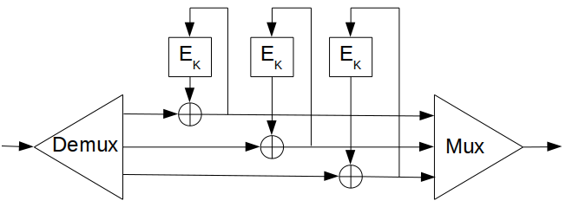
Figure 9.16 Interleaving three CFB encryptions.
9.13 Block Ciphers versus Stream Ciphers
Although block and stream ciphers are very different, block ciphers can be implemented as stream ciphers and stream ciphers can be implemented as block ciphers. The best definition of the difference I’ve found is from Rainer Rueppel [1362]:
Block ciphers operate on data with a fixed transformation on large blocks of plaintext data; stream ciphers operate with a time-varying transformation on individual plaintext digits.
In the real world, block ciphers seem to be more general (i.e., they can be used in any of the four modes) and stream ciphers seem to be easier to analyze mathematically. There is a large body of theoretical work on the analysis and design of stream ciphers — most of it done in Europe, for some reason. They have been used by the world’s militaries since the invention of electronics. This seems to be changing; recently a whole slew of theoretical papers have been written on block cipher design. Maybe soon there will be a theory of block cipher design as rich as our current theory of stream cipher design.
Otherwise, the differences between stream ciphers and block ciphers are in the implementation. Stream ciphers that only encrypt and decrypt data one bit at a time are not really suitable for software implementation. Block ciphers can be easier to implement in software, because they often avoid time-consuming bit manipulations and they operate on data in computer-sized blocks. On the other hand, stream ciphers can be more suitable for hardware implementation because they can be implemented very efficiently in silicon.
These are important considerations. It makes sense for a hardware encryption device on a digital communications channel to encrypt the individual bits as they go by. This is what the device sees. On the other hand, it makes no sense for a software encryption device to encrypt each individual bit separately. There are some specific instances where bit- and byte-wise encryption might be necessary in a computer system — encrypting the link between the keyboard and the CPU, for example — but generally the encryption block should be at least the width of the data bus.